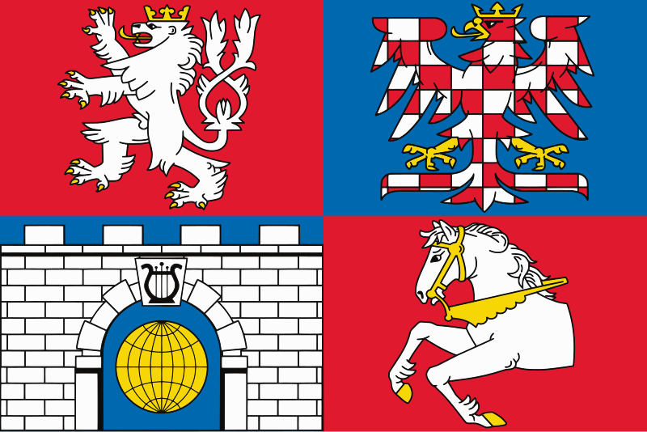
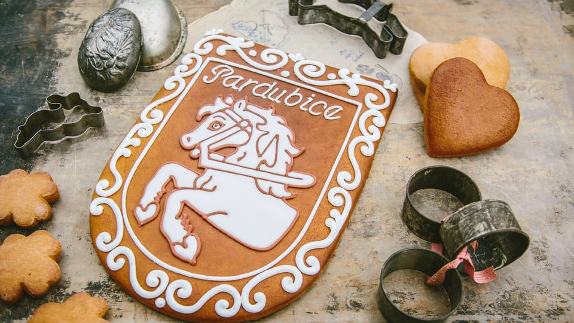

La región de Pardubice, ubicada en el corazón de la Bohemia oriental, es una zona con una rica herencia histórica, una economía dinámica y una vibrante oferta cultural y recreativa. Su capital es Pardubice.
Bandera de la región
La cultura de Pardubice se caracteriza por una rica tradición en fiestas populares y eventos culturales. Uno de los ejemplos más notables es la Velká Pardubická, una famosa carrera de obstáculos ecuestre reconocida a nivel internacional, que no solo pone en valor la tradición hípica de la zona, sino que también atrae a numerosos turistas y aficionados al deporte.
Pan de jengibre de Pardubice
Pardubide es conocida como la tierra del pan de jengibre y grandes músicos. Lugar de nacimiento de Bedřich Smetana y Bohuslav Martinů.